品牌介紹
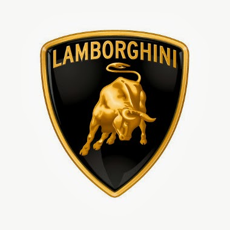
藍寶堅尼在1966年因Miura跑車而獲得了廣泛好評，該車配有中置引擎和後輪驅動，此後成為超級跑車的標準配置。1998年5月27日把公司轉手賣給福斯集團旗下的奧迪汽車。奧迪的接手對藍寶堅尼來說進入了一個擁有強大而穩定的生產力的時代。在21世紀初期，銷售額以接近10倍的速度增長。而藍寶堅尼車款也常出現在電影中，廣為人知的暗黑騎士蝙蝠車、變形金剛4內無黨無派的賞金獵人。
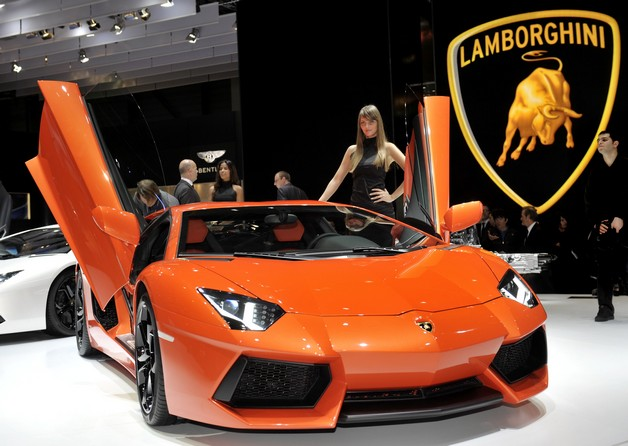
建議售價為379,700美元
● 0-100公里時速加速時間2.9 秒
● 綜合油耗表現百公里17.2 公升
● 峰值馬力700 匹 @ 8,250 轉
● V型12缸自然進氣引擎
品牌介紹
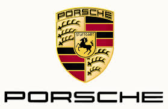
Porsche雖然是以打造純種跑車而聞名於世，但無論是2002年推出品牌首款SUV：Cayenne，或是2009年發表4門跑房車：Panamera，Porsche都恪守「造型完美時，性能就會伴隨而至」的創辦理念，並以打造賽車的標準來開發、調校與製作每一款車型。
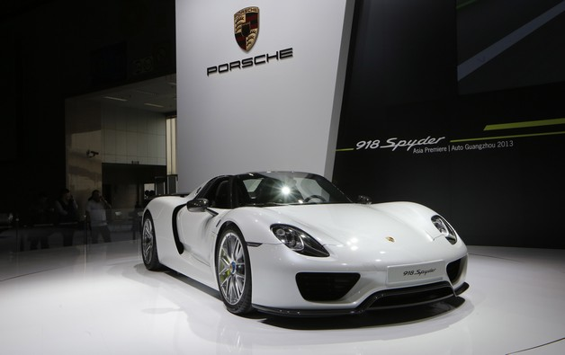
全車售價將突破5000萬
● 918 Spyder於過去兩款前輩相同，可說是集Porsche當前造車工藝精華於一身，搭載一具4.6升V8引擎，並搭配裝置在前軸與整合於變速箱中兩具電動馬達，最大綜效馬力可達887hp最大馬力，0-100km/h起步加速只需要2.6秒，0-200km/h加速也僅為7.2秒，極速可達345km/h，同時它也再度挑戰紐柏林北賽道，一口氣將單圈成績壓進七分鐘以內，為6分57秒，而且它也是當前超跑三大天王中〈與Ferrari Laferreri、McLaren P1齊名〉唯一公布柏林北賽道確切單圈成績的車款，Porsche對它的信心之高可見一斑。
品牌介紹
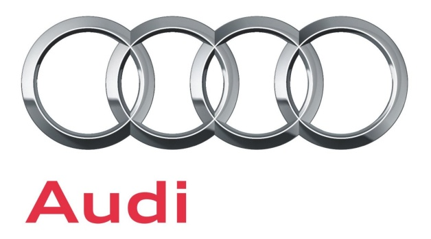
奧迪汽車主要從事汽車製造業，其產品線非常豐富，從摩托車、迷你汽車至運動型多用途車均有涉足，它的產品主要針對豪華型汽車市場。奧迪汽車的特色在於其注重穩定紮實的操控感！
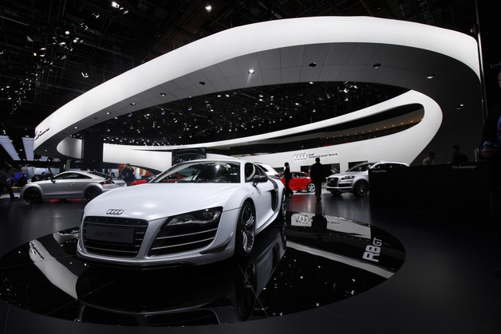
價格1,093.0~1,185.0萬
● 排量5.2L
● 油耗6.7km/ltr
● 馬力525hp@8000rpm
● 扭力54.0kgm@6500rpm
● 變速系統自手排|軸 距2650mm
品牌介紹
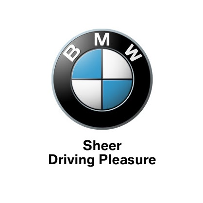
目前BMW集團是BMW、MINI、Rolls-Royce三個品牌的擁有者。經常與奧迪、賓士一同並列為德國三大豪華汽車製造商。BMW對技術研究十分重視，在專業媒體測試中BMW引擎的馬力輸出往往比同級車高，然後又能保持優良的精緻度與低噪音，底盤操控性專業評價也常比同級車傑出，這些駕駛樂趣是BMW能在後來被公認與賓士並駕齊驅的原因。
BMW也曾大量提供新車協助電影詹姆斯·龐德系列部份續集的拍攝，但也因為在電影中過分強調車輛的存在，遭許多影評及影迷批評過份商業化而扭曲了影片的整體質感。附註一提的是，而後它並沒有繼續贊助007第20集《誰與爭鋒》（Die Another Day）的車輛使用，而是由福特汽車旗下所屬的幾個汽車品牌福特、捷豹與阿斯頓·馬丁取而代之。
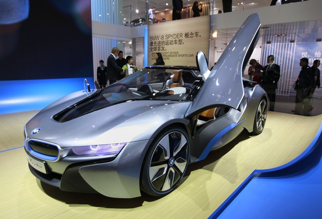
$ 989 萬 牌照稅 $ 7,120元
● 引擎型式 渦輪增壓, 直列3缸,DOHC雙凸輪軸, 12氣門
● 排氣量 1499cc
● I8以創新的Plug-in Hybrid技術傲視車壇。是一輛可插電式油電混合車，內載231匹三汽缸汽油引擎，外加131匹馬力電動馬達，共可提供362匹馬力，0-100km/h加速只需約4.4秒，電子限制的每小時最高速度為250公里（155.3英里）。而BMW i8曾於湯姆·克魯斯主演的動作電影「不可能的任務：鬼影行動」中出現。
品牌介紹
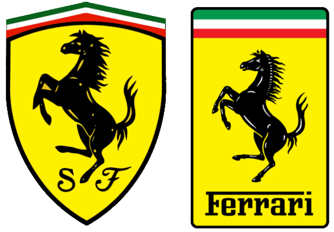
在1929年創辦法拉利車隊時，原本無意製造跑車，他只作為業餘車手的贊助人。法拉利以改裝愛快羅密歐的跑車成功參與賽事，至1938年，他被愛快羅密歐聘請作為賽車部的主管。1940年，恩佐得悉愛快羅密歐計劃把其心愛的法拉利車隊收購並奪取控制權，便離開愛快羅密歐。但由於合約的限制，他暫時不能參與賽車，而法拉利車隊則變成Auto Avio Costruzioni Ferrari，製造機械工具及飛機配件。第一部設計供一般道路行駛的法拉利街車是1947年的125S，以1.5公升V12引擎推動。恩佐為了賺取經費予其賽車隊法拉利車隊，迫不得已才製造及售賣此跑車。法拉利跑車很快便獲得優良的名聲。
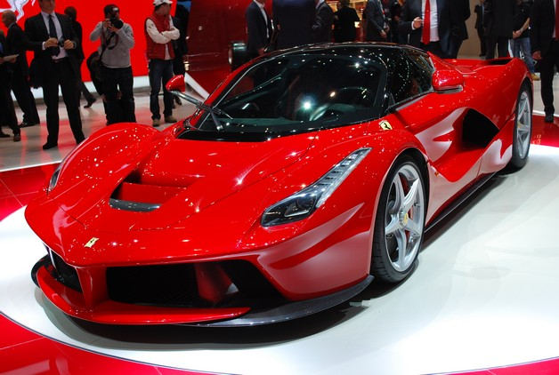
＄1,700,000美元
● 加速：0-100 公里3 秒內完成，還能在 7 秒內從 0 加速到 200 公里／時
● 馬力：949ｈｐ
● 引擎：6.2升V12自然進氣引擎
● （代號F70，內部代號F150）是法拉利推出的一款混合動力超級跑車。車名中「La」為義大利語中用於陰性單數名詞前的定冠詞，相當於英語的「The」。該車於2013年在日內瓦車展上首次亮相。它的設計借鑑了法拉利FXX賽車的測試成果。並計劃將車重控制在1,000公斤以內， 但最終公布的重量為1,255公斤。LaFerrari為限量生產，目前計劃生產499輛。
LaFerrari是首款完全由法拉利自主研發的車型，法拉利測試其最高時速為350公里（220英里）。百公里加速在3秒之內，300公里時速的加速時間在15秒以內。
品牌介紹

不同分別有賓士、奔馳、平治、梅賽德斯、朋馳等多種中文簡稱），是一家以豪華和高性能著稱的德國汽車品牌。
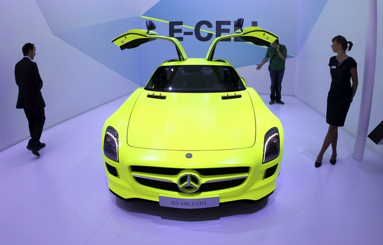
$ 1375 萬 牌照稅 $ 69,690元
● 0-100KPH：3.6秒
● 極速：337 KPH
● 最大輸出功率：650BHP
品牌介紹
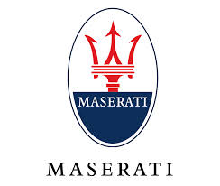
義大利知名的跑車生產商Maserati起源於一個熱愛汽車的家族，Maserati家族一共有七個兄弟，除了排行老六的藝術家Mario Maserati之外，其他六個兄弟全部都對汽車生產有所涉略，原先他們都在一間車廠工作，後來老三、老四老五一起離開該公司創立Officini Alfrieri Maserati。

當時對外販售總共僅有50部，以60萬歐元開放預購
● 引擎：V12
● 0到100加速時間：3.8秒
● 輸出功率：630馬力/ 8000轉每分
品牌介紹
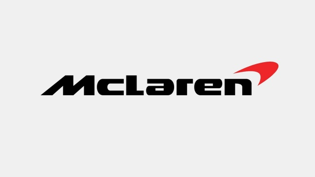
由創辦人Bruce McLaren 成立於1963年，信奉簡約的麥卡倫其標誌也非常簡單，就是在公司的名稱後面加上代表速度的紅色標誌！